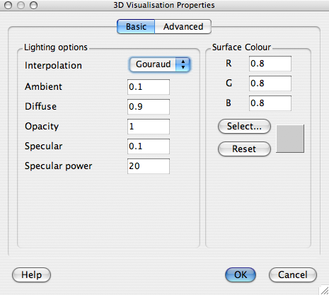
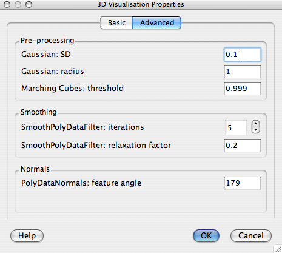

The dialog has two sections: "Basic" - dealing with lighting and surface colouring; and "Advanced" which allows the user to tune some of the parameters used to determine the shape of the extracted surface mesh. Usually the surface in question is being determined from a segmented brain and is intended to approximate the "pial" surface.
|
 |
These settings determine how the pial surface is rendered. Modifying these values allow you to customize the look of the main images surface representation.
|  |
|